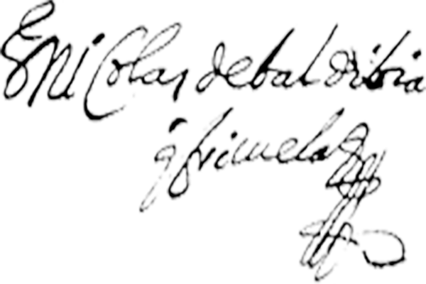

- `~
- 1!
- 2@
- 3#
- 4$
- 5%
- 6^
- 7&
- 8*
- 9(
- 0)
- -_
- =+
- tab
- q
- w
- e
- r
- t
- y
- u
- i
- o
- p
- [{
- ]}
- \|
- a
- s
- d
- f
- g
- h
- j
- k
- l
- ;:
- '"
- return
- delete
- shift
- z
- x
- c
- v
- b
- n
- m
- ,<
- .>
- /?
- shift
- space
About our keyboard
Our dataset was created by extracting the characters from the deeds notarized by Don Nicolas de Baldibia y Brisuela who acted as interim notary while serving as alcalde ordinario (city councilman) in the city of Buenos Aires in 1658. In Buenos Aires, the office of the public notary was frequently vacant and it was common to appoint alcaldes ordinarios to serve as interims. The high turn-over rate in the office made this collection of notary records unique as it compiles many different writing styles.
We used the characters from our dataset to create this virtual keyboard. In the seventeenth century, the “v” and “u” were interchangeable. Thus, on the keyboard those characters are the same. The “w” was not used in seventeenth-century Spanish. We created our own “w” to add to the keyboard by merging two “u”. The “k” was rarely used and so we created one for this keyboard as well. Additionally, we incorporated the @ and # signs, an ornamental doodle used to embellish signatures, and the signature of our notary, Don Nicholas de Baldibia y Brisuela. Click the shift key to discover these symbols.
About our notary
Don Nicolas de Baldibia y Brisuela was born in Concepción de Chile in 1603. Before moving to Buenos Aires, he served as teniente de gobernardor in Chile and held the same office in Cordoba del Tucuman in 1638. The following year he was appointed as tesorero (treasurer) de la Real Hacienda in Cordoba. It is not known when he moved to Buenos Aires but he appeared serving as alcalde ordinario in 1650 and, for a second term, in 1658. In 1651, Governor Jacinto de Lariz granted him an encomienda over the Ohomas natives. However, in 1662, the crown refused to confirm this concession and, presumably, it changed hands. In his youth, Don Nicolas was known for his addiction to gambling and, in 1635, he publicly renounced this vice. He married Doña Maria de Peñalva y Angulo and had five legitimate children: Elena, Agueda, Pedro, Alejo, and Andres.
Download the font from here.